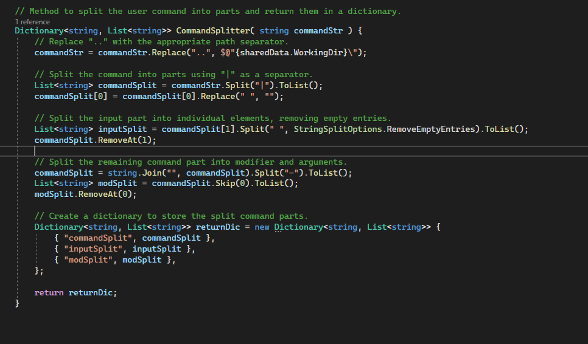
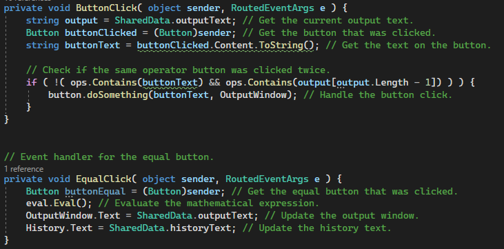

C#
.NET
This CLI project is designed for educational purposes, intended to facilitate learning and understanding of programming concepts. It is devloped using C# and the .NET framework. This project offers essential file management features, providing users with a seamless copying, directory viewing, and navigation through directories. This project exemplifies my dedication to building practical solutions that enhance everyday tasks through technology.
This project is a Command Line Interface (CLI) File Management System (FMS) developed in C# and the .NET framework. It provides essential file and directory operations, including directory viewing, file and directory copying, and directory navigation. The system utilizes the power of reflection to dynamically call methods from different class files. based on specified modifiers (e.g., view all files, view directories).
The provided image serves as an illustrative example of the syntax structure: (command) (modifier) (pipe) (input)... . The number of spaces or lack thereof make no difference, however you always need a modifier and you always need a pipe. Further Documentation can be found on my Github.
In the provided example I used the change directory command with the direct-directory modifier to specify the exact directory I want to change to. You'll notice there is a ".." in the directory. That is to specify the current/working directory. It includes a backslash so no added backslash is neccessary just the name of the folder.
The architecture of this project consists of a main file that serves as the project's entry point. Within this main file, you'll find a text parser and sanitizer responsible for dissecting user input to identify commands, modifiers, and input variables.
To execute commands and perform actions, the program utilizes .NET's reflection capabilities to interact with other files. For example, it can access the view directory file and invoke specific methods within it based on user input.
This project was made for a client. She is a full-time student working full-time with a side business a baking. Her business has shot up enough that she needed a basic website to show off what products she makes, pricing, and where to contact her. I used html for the structure and Bootstrap to cleanly organize and style the webpages. You can find the code here.
C#
.NET
This is a general purpose calculator application for windows. It uses not only C# and the .NET framework but also Windows Presentation Foundation for the GUI. It has all of your typical operations (addition, subtraction, etc) as well as some more advanced ones like square root. It also has variable setting and keeping to aid in more complicated calculations. To top it all of it also has the three different options for styling.
The provided images are of the different styles offered for the app.
The "6540" at the top is the last calculated number, it can be called on by pressing the "hist" button, or you can press "set" and then the variable you want to use to store that number for later use.
The architecture of this application has a main xaml and cs files since it is a WPF app. To reduce redundancy I put as many of the xaml buttons under the same funciontality with abstraction. However, as you can see with in this image some functionality couldn't be abstracted and needed its own attention.
The architecture follows the Command Design Pattern. It handles user input at the GUI level to extract what "commands" the user is trying to send to the program. It then delegates all the actual processing and functionality to seperate class files and methods elsewhere in the program. This is a form of abstraction to keep the program simple, modular and robust. You can find out more about this application here.
This webpage was my first learning project dealing with all three web-development techonologies (HTML, CSS, and JavaScript). Something I wanted for myself was a tool that could generate new color ways for me so I could have random colors placed next to each other to see how they would look for projects down the road. It also has functionality for choosing color themes based on color theory principles like complementary.
The program utilizes a DOM feature called template to create multiple color divs dynamically in JavaScript. This way I can scale up to as many different colors as I see fit, and I can add them with just the click of a button. It also allows for every color div to fall back on the same variables for color randomization no matter how many times it gets deleted or added.
In order to restrict generated colors based on color themes the colors need to be able to be put on a color wheel. The issue is that most people want hex values because they're easier to type and easier to read. Hex value colors are values of red green and blue, but the color wheel is based on values of red blue and yellow so there's no direct way of putting hex colors on the color wheel.
Luckily for me people out there have already figured out algorithms for converting rgb colors to HSL (Hue, Saturation, and Lightness) values. So all i need to do is apply that algorithm in javascript to place my colors on a color wheel. Then I can apply color theory to provide whatever color harmonies the user might want. Restricting the color is just a matter of selecting a range on the color wheel based on the provided first color.
You can find my code and the applicaiton of that algorithm here.
The inpiration for this program came directly out of need. There is a rocket simulator game called Kerbal Space Program. The main mechanic of the game is designing a rocket based on pre-built parts to launch into space. The aspect that I find most difficult about this is planning how much fuel I need for a given destination. So I made a program in python that can iteratively calculate how many fuel tanks I'll need for any given journey.
The structure of the code resembles more of a procedural or funcitonal programming paradigm for this project. That is partly because I wasn't as familiar with object-oriented programming yet, but also because the program didn't call for OOP. I only needed a few different functions for the math, and a funciton for continuously getting user input. Everything is contained in a single file.
You can find my code here.